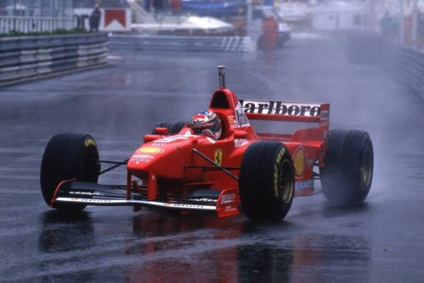

Formula 1 se često opisuje kao vrhunac automobilskog inženjerstva
.
Zvanično Svjetsko prvenstvo Formule 1 osnovano je 1950. godine, a prva trka održana je 13. maja na stazi Silverstoun u Velikoj Britaniji.
U prvim decenijama takmičenja bolidi su se znatno razlikovali od današnjih.
Bili su jednostavnije konstrukcije, imali su manje razvijenu aerodinamiku i pružali su mnogo manju zaštitu vozačima.
Tokom 1960-ih i 1970-ih godina tehnologija bolida počela je brzo da napreduje.
Timovi su razvijali nove konstrukcije, snažnije motore i aerodinamičke dodatke koji su omogućavali veću brzinu i bolje prijanjanje na stazu.
Tokom 1980-ih i 1990-ih godina Formula 1 doživjela je veliku popularnost širom svijeta. Početkom 21. vijeka tehnologija je nastavila da mijenja F1. Elektronski sistemi, napredna aerodinamika i precizna analiza podataka postali su veoma važni za uspjeh timova. Mihael Šumaher obilježio je početak ovog perioda osvajanjem pet uzastopnih titula od 2000. do 2004. godine, dok je Luis Hamilton kasnije postao jedan od najuspješnijih vozača u istoriji prvenstva. Danas je Formula 1 moderan sport u kojem učestvuju međunarodni timovi, vrhunski vozači, inženjeri i veliki broj stručnjaka. Savremeni bolidi koriste hibridne pogonske sisteme koji kombinuju motor sa unutrašnjim sagorijevanjem i električnu energiju. Velika pažnja posvećuje se bezbjednosti, efikasnosti i razvoju novih tehnologija.
U 2026. godini, 11 timova sa po dva vozača se takmiče za titule Trkačkog šampiona svijeta (pojedinačni šampionat za vozače) i Konstruktorskog šampiona svijeta (za timove).

Sezona Formule 1 traje uglavnom od marta do decembra i sastoji se od velikog broja trka koje se održavaju u različitim državama širom svijeta. Svaka trka nosi naziv Velika nagrada (Grand Prix). Vozači i timovi putuju od jedne staze do druge, a tokom cijele sezone sakupljaju bodove koji odlučuju o osvajačima šampionata.
U sezoni 2026. planirane su 24 trke na pet kontinenata. Raspored obuhvata poznate staze kao što su Monako, Silverstoun, Monca i Spa-Frankoršamp.
Trkački vikend u Formuli 1 predstavlja period tokom kojeg se vozači i timovi pripremaju za glavnu trku. On traje tri dana – petak, subotu i nedjelju.
Na standardnom trkačkom vikendu, organizuju se dva slobodna treninga u petak, omogućavajući timovima i vozačima da se upoznaju sa stazom. U subotu se održava još jedan slobodan trening, pa onda i kvalifikacije, koje određuju početni plasman vozača za glavnu trku u nedjelju.
Pored toga, postoje i sprint vikendi, u kojima se organizuje još jedna kraća trka zvana sprint, pored ove glavne. Jedan trening u petak je zamijenjen za kvalifikacije za sprint trku, dok je trening u subotu zamijenjen upravo sprint trkom.
Vozači i timovi imaju priliku da osvoje poene svakog trkačkog vikenda. Oni moraju biti brzi, ali i konzistentni tokom cijele sezone. Tokom sezone bodovi se sabiraju, a vozač sa najvećim ukupnim brojem bodova na kraju prvenstva osvaja titulu svjetskog šampiona.
Najboljih 10 vozača na glavnoj trci osvajaju poene, gdje prvi dobija 25, drugi 18, treći 15 itd. dok deseti osvaja 1 poen. Na sprint trci je nagrađeno 8 najboljih vozača, gdje prvi dobija 8, drugi 7 itd. dok osmi dobija 1 poen.
Vozač i tim koji na kraju sezone ima najveći ukupan broj bodova osvajaju šampionat. Ako dva vozača završe sezonu sa istim brojem bodova, prednost se određuje prema boljim rezultatima, prvenstveno prema broju pobjeda.